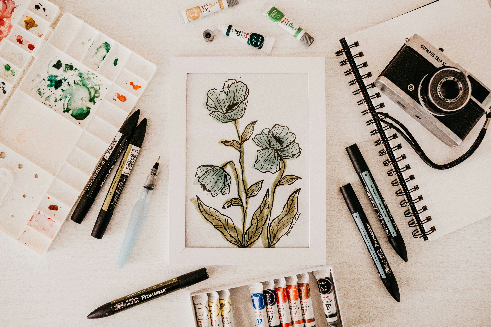

Visual Arts in Education

At its core, I would consider visual art an exercise of the mind. When a student first approaches a blank canvas, a block of clay, or the blank screen of their iPads, students often enter a moment where they are going to have to make a series of complex decisions, the majority of which will be intuitive.
Unlike the majority of education, the arts have no previously directed correct answers. Students must analyze spatial relationships, evaluate color theory, balance composition, and decide how they would like to represent their ideas visually. This process helps students build flexible thinking, allowing them to understand that a complex problem can have multiple solutions, and it is up to them to apply their experience and the knowledge they have accrued to come up with a solution. This willingness to experiment and pivot when an initial idea fails to work. This skill is something that can be transferable to scientific research, entrepreneurship, and software development.
Moreover, visual art serves as a universal language. Whether students are studying art history or analyzing works from different parts of the world, they are given a unique opportunity to dive into a gamut of cultures, historical eras, and worldviews. A painting from 17th-century Japan reveals the political traditions of the state, while a mural from modern South America helps illustrate universal human experiences of love, joy, and pain. These paintings often transcend the physical and geographical boundaries of our world, allowing students to learn about a country not simply actively through memorizing statistics and facts for a test they may forget in a short period of time, but rather visually experience the evolution of humanity and our culture across time and space.
In addition, participation in the creation of visual arts also leads to increased social skills among students. Art is rarely a medium that stays confined on the page for long, as students are encouraged to share and talk about their work. This increased interaction with sharing helps students to have positive interactions with their peers. This can also lead to increased conscience, as they improve their skills and learn more about their artistic abilities. Students will also develop coping strategies for dealing with criticism, which will ensure that students are more confident in the working world in the future.
As a child we all remember sitting with our crayons or watercolors, painting whatever we wanted and letting our imaginations run free. The problem is, as we grow up, our education system often infantilizes the need for visual arts in education, and thus it is often put on the back burner to make room for required subjects. However, while traditional subjects such as mathematics and sciences equip students with the knowledge for their future fields of interest, visual arts provides students with transferable skills such as confidence and problem solving skills, that complement their technical skills/knowledge.